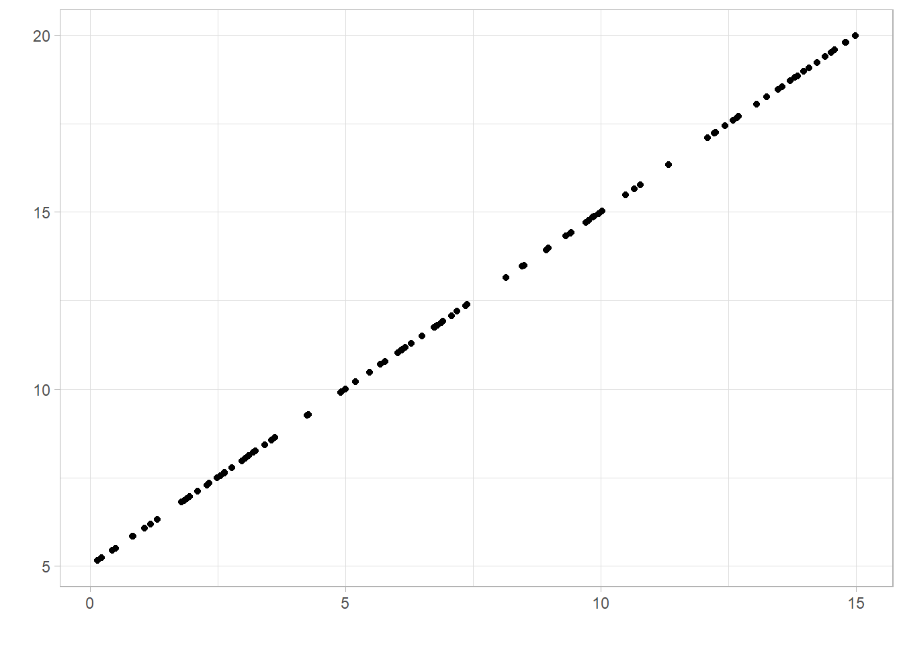
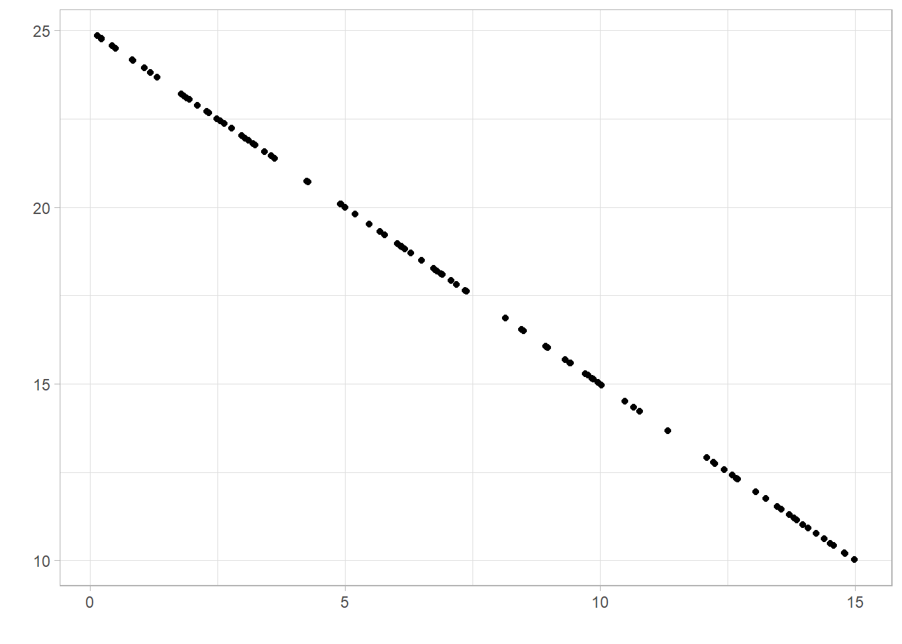

Area | Recorded crimes | Violent crime | Nonviolent crimes |
|---|---|---|---|
East Midlands | 419,236 | 161865 (38.61%) | 257371 (61.39%) |
West Midlands | 572,937 | 233851 (40.82%) | 339086 (59.18%) |
4 Making comparisons
Often, our research question will involve a comparison between groups, investigating trends over time, or investigating a relationship between two numeric variables. There are multiple approaches we can use to compare groups but the correct choice will depend on the outcome of interest and the type of relationship we are interested in. This section will describe the most common comparative statistics, their interpretations, and the reasons we may choose to use one approach over another.
4.1 Comparing a categorical variable between groups
When comparing a categorical variable between groups, we are often comparing the summary measures that were introduced in the previous section: proportions, percentages, and rates. These summaries are either compared using the absolute difference or the relative difference.
To demonstrate the difference between these comparisons, let’s consider the number of recorded crimes in the East Midlands we saw earlier and compare them to the number recorded in the West Midlands. These crimes are categorised as either violent or non-violent. We wish to compare the distribution of these types of crimes between the regions, i.e. was the proportion of recorded crimes that were violent similar between regions. The table below shows the number and type of crime, along with the percentage of total crimes in each region that were classified as either violent or non-violent:
The absolute difference is calculated by simply subtracting proportions or percentages between groups. In this example, the absolute difference in proportions of total crimes that were violent is (0.408 - 0.386) 0.22, and the absolute difference in percentages is (40.8% - 38.6%) 2.2%. The West Midlands had 2.2% higher percentage points of recorded violent crimes than the East Midlands. If we carried out the sums the other way round, we would get a negative number (-2.2%), indicating a reduction in the percentage points in East Midlands compared to the West. Absolute differences are interpreted relative to a null value of 0, representing no difference.
Alternatively, the relative difference is found by dividing one value by another. Unlike the absolute difference, this will be the same whether we use the proportion or percentage. The relative difference in the percentage of violent crimes between regions is (40.8% / 38.6%) 1.057. This means that the percentage of crimes recorded as violent was 1.057 times higher in the West Midlands compared to the East Midlands. If we wanted to do this comparison the other way around (comparing the East to West Midlands), we would find a relative difference of (38.6% / 40.8%) 0.946. Therefore, the percentage of recorded crimes in the East Midlands that were violent was 0.946 times the percentage in the West Midlands. When interpreting relative differences, we are comparing the result to a null value of 1, given when both values are equal. As 0.946 is below 1, this represents a reduction.
4.2 Comparing numeric variable between two groups
The most appropriate method to compare a numeric variable between groups will once again depend on the distribution of the variable. A comparison can either be made using the difference in means, where both groups have a normally distributed sample, or difference in medians, where one or both of the samples are skewed.
Earlier in the course, we saw the settlement funding assessment (SFA) for each local authority in England in 2015. We may want to compare this between two regions, for example between the North West and the Yorkshire and Humber regions. Before choosing the most appropriate comparison, we must check the distribution of SFA in each region using a histogram:
As with the full sample, both regions’ values are positively skewed (with a longer upper tail). This means that a comparison of means would be inappropriate and we must use the difference in medians. The median of the North West was £57.15 million, the median in Yorkshire and the Humber was £58.49 million. This makes the median difference £1.34 million (or -£1.34 million depending on which difference we are finding). Therefore, the SFA was £1.34 million higher on average in the Yorkshire and Humber region than in the North West in 2015.
4.3 Comparing variables over time
When dealing with temporal data, it is important to quantify differences across time as well as visualising them using a line graph. Comparison across time is typically given as an absolute difference between time points, as a relative difference, or this is commonly converted into a percentage change.
Recall the line graph given in an earlier section showing the reduction in the number of violent crimes recorded between 2010 and 2020:

This difference can be quantified by comparing the number of violent crimes recorded in 2010 and 2020. The absolute difference is found by subtracting the number of violent crimes recorded in 2020, 1,239,000, by the number in 2010, 1,841,000. There were 602,000 less violent crimes reported in 2020 compared to 2010.
The relative difference is found by dividing one count by the other. In this example, the relative difference (\(1,841,000 \div 1,239,000\)) is 1.486. This means that there were 1.486 times more violent crimes reported in 2020 compared to 2010. The percentage change can be found by comparing the relative difference to the null value of 1 (no relative difference). When comparing 2010 to 2020, the relative difference was 0.486 above 1, giving the proportion increase. This can be multiplied by 100 to give a percentage increase of 48.6%. Therefore, there were 48.6% more violent crimes reported in 2010 compared to 2020.
The relative difference can also be found by comparing 2020 to 2010 if we want to give the relative or percentage decrease in violent crime. The relative difference (\(1,239,000 \div 1,841,000\)) is 0.673, so there were 0.673 times the number of crimes reported in 2020 than 2010. This result is not intuitive, so converting the difference into a percentage decrease can make the value easier to interpret. As with an increase, we first find the difference between the relative difference and the null (1 - 0.673). This gives a proportion decrease of 0.327 or a percentage decrease of 32.7%. Therefore, there were 32.7% fewer violent crimes reported in 2020 compared to 2010.
4.4 Identifying trends between two numeric variables
Correlation coefficients are summary statistics that describe the strength and direction of a relationship between two numeric variables. There are different types of correlation coefficients that exist, the choice of which depends on the nature of the trend it is measuring: is it linear or nonlinear?
The Pearson’s correlation coefficient measures the association between numeric variables if we assume it is linear. It essentially measures how close points lie to the line of best fit added to a scatterplot. The alternative to Pearson’s correlation is Spearman’s correlation coefficient, this measures the general trend upwards or downwards, whether or not this is linear. As with medians and IQRs, Spearman’s correlation coefficient uses less of the data than Pearson’s so we only use it where necessary.
Correlation coefficients take a value between -1 and 1. A value of 0 represents no association, values of +/- 1 represent perfect association (a straight or curved line depending on the choice of statistic). Generally, a correlation coefficient will lie between 0 and +/- 1 where the further the value gets from 0, the stronger the relationship is.
A correlation coefficient is said to show a positive association if the value is above 0. This means as one variable increases, the other also tends to increase:

A correlation shows negative association if the value is below 0. This means as one variable increases, the other tends to decrease:

A correlation coefficient close to 0 represents little or no association. However, it could also be an indication that the relationship is nonlinear and the Pearson coefficient is inappropriate. In this case, the Spearman coefficient may be more appropriate: